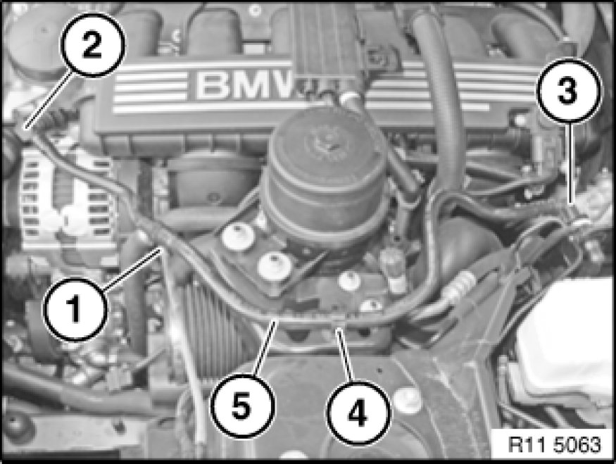
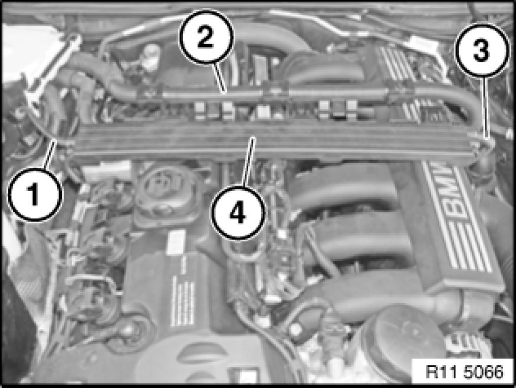

Intake Manifold: Service and Repair
11 61 050 - Removing and installing air intake manifold (N52K)

Necessary preliminary tasks:
- Remove tension strut Service and Repair
- Remove intake filter housing Service and Repair
- Remove ignition coil cover Removing and Installing/Replacing Ignition Coil Cover
- E83 only
Remove partition wall, equipment compartment, upper section, left
Disconnect battery negative lead Disconnecting and Connecting Battery Negative Lead
Remove microfilter housing.

Release vacuum line (5) from line holder (4).
Disconnect vacuum hose (1) from vacuum line (5).
Release connections (2 and 3) of vacuum line (5).
Lay vacuum line (5) to one side.
Installation:
Connections (2 and 3) must snap audibly into place!
Unscrew nuts (1).
Installation:
Replace self-locking nut (1).
Place oil reservoir (2) in direction of arrow to one side.
Release rubber holders (1 and 2) from guide.
Disconnect plug connection (3).
Installation:
Plug connection (3) must snap audibly into place!
Unclip line (4) from line holder.

Open cable duct (4).
Expose lines (1 and 3).
Lay cable duct (4) (upper and lower sections) to one side.
Note:
The lines (1 to 3) do not have to be detached in order to remove the air intake manifold!
Unfasten hose clip (1).
Tightening torque 11 61 3AZ [1][2][3]11 61 Air Intake Manifold.
Detach clean-air gaiter (3) at position (2) in direction of arrow and remove.
Disconnect plug connection (1).
Installation:
Plug connections (1) must snap audibly into place!
Important!
Cover fitting (2) with suitable apparatus to prevent objects getting into it.
Release screw (2).
Tightening torque 11 61 4AZ [1][2][3]11 61 Air Intake Manifold.
Unclip fuel line (1) at position (3) from holder (not shown).
Disconnect plug connection (1) and lay to one side.
Unclip lines at positions (4).
Remove plug connections (2 and 3).
Installation:
Plug connections (1 to 3) must snap audibly into place!
Lay both lines (5) between intake ducts (direction of arrow) downwards.
Note:
For purposes of clarity, the graphic shows the engine wiring harness removed.
Release screws (1).
Tightening torque 11 61 5AZ [1][2][3]11 61 Air Intake Manifold.
Lay cable duct (2) with bracket (3) and engine wiring harness to one side.
Unfasten screws (1 and 3).
Tightening torque 11 61 1AZ [1][2][3]11 61 Air Intake Manifold.
Unscrew nuts (2).
Tightening torque 11 61 2AZ [1][2][3]11 61 Air Intake Manifold.
Expose air intake manifold (3) in following work steps:
1. Raise air intake manifold (3) approx. 5 - 10 cm (see arrow 1).
2. Turn air intake manifold (3) at front through 45° (see arrow 2).
Note:
The following plug connections and connections are located below the intake ducts.
Disconnect plug connections (2).
Release engine ventilation connections (1).
Installation:
Engine ventilation connections (1) and plug connections (2) must snap audibly into place!
Release tank venting connection (2).
Installation:
Tank venting connection (2) must snap audibly into place!
Disconnect air intake manifold (1) in upward direction.
Important!
Cover intake entries (1) with suitable apparatus to prevent objects getting into them.
Installation:
Sealing faces must be free from oil and grease.

Installation:
Replace gaskets (1).

Assemble engine.
Check air intake system for leaks.